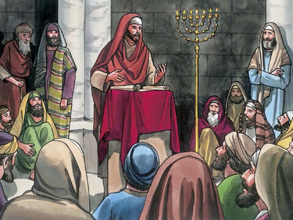
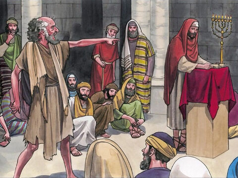
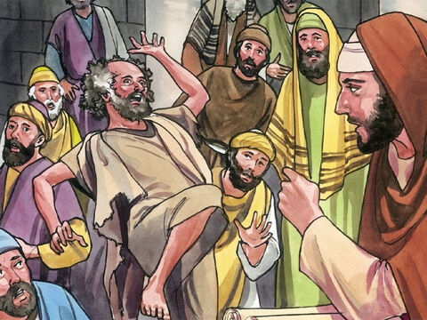
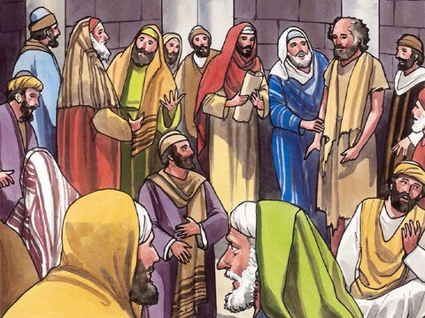

Lord Jesus Heals A Man With An Unclean Demon
And came down to Capernaum, a city of Galilee, and taught them on the sabbath days.
And they were astonished at his doctrine: for his word was with power.
And in the synagogue there was a man, which had a spirit of an unclean devil, and cried out with a loud voice,
Saying, Let us alone; what have we to do with thee, thou Jesus of Nazareth? art thou come to destroy us? I know thee who thou art; the Holy One of God.
And Jesus rebuked him, saying, Hold thy peace, and come out of him. And when the devil had thrown him in the midst, he came out of him, and hurt him not.
And they were all amazed, and spake among themselves, saying, What a word is this! for with authority and power he commandeth the unclean spirits, and they come out.
And the fame of him went out into every place of the country round about.
Luke 4:31-37
- 
- 
- 
- 